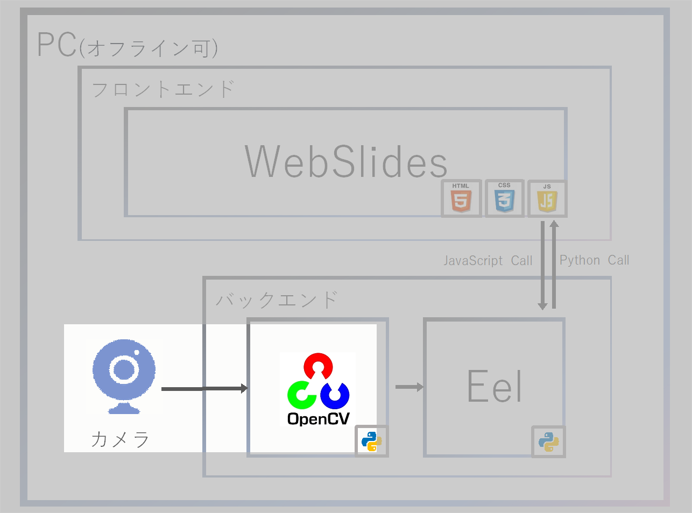
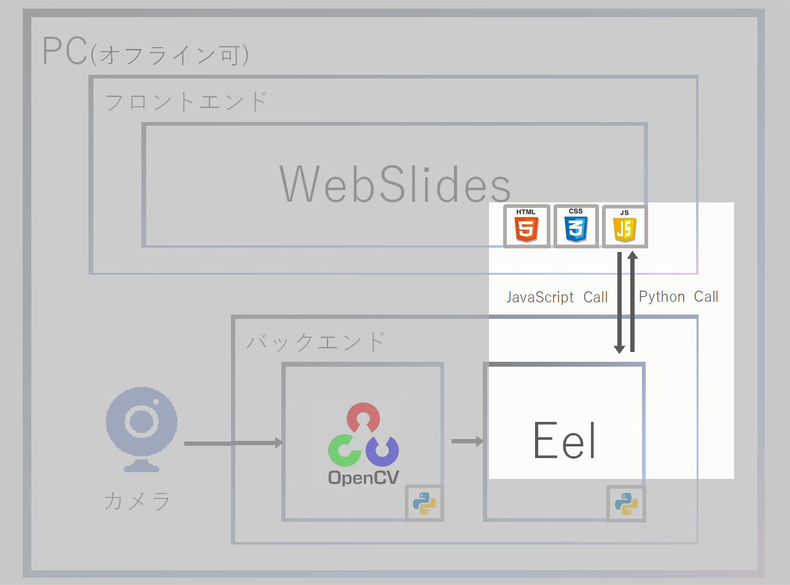
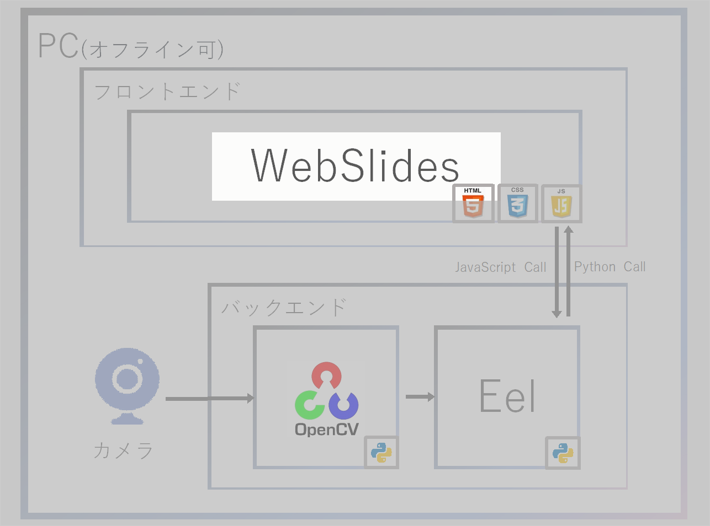

突然ですが……
プレゼンソフトって
結構沢山ありますよね？
プレゼンソフト何使ってる？
☞聞取調査結果 ※高橋独自調べ
と言うか……
お前、誰よ？

名前：高橋かずひと
Twitter：@KzhtTkhs
お仕事：組込、画像処理、
：IoT、Webアプリなど
その他、個人の活動で、インディーゲーム制作のお手伝をしています。
最近はディープラーニング(主に物体検出)やＡＲでよく遊んでいます。
そして、やっと本題。
※ここまでPythonの話題無し
昨今のPythonの盛り上がりは凄いですね😀！
僕は良く画像処理でPythonを使っています。
ちょいちょい作ったものをネタに
勉強会で発表するのですが……
スライドからデモへ切り替えようとして長い
※高橋 失敗例①
※5分のLTとかで1分待つとか……
発表の時に限って発生するエラー
※高橋 失敗例②
そもそも、スライドから切り替えること自体
あんまりかっこよくない
あんまりかっこよくない
※個人の感想です
では、埋め込もう🤔
もはやお約束
※個人の感想です
では、埋め込も……
でも、実際に動いているところ見せたい🙄
※わがまま
しかし、望みを叶えるソフトは無い😇
🤔
そうだ、Pythonなら何とかしてくれる🙂！(名案)
そうだ、プレゼンソフトを作ろう🙃(迷案)
とは言え、ゼロから作るのは大変なので
いくつかのOSSやパッケージを使います。
こんな感じ🤔

システム構成 概要
System architecture overview
WebSlides：1.5.0
OpenCV：4.1.2
Eel：0.11.0
Webカメラ

OpenCV：

Eel：
システム構成 概要
System architecture overview
OpenCVでカメラ画像を取得する
OpenCV：
オープンソースのコンピュータビジョン向けライブラリ
システム構成 概要
System architecture overview
Eelでローカルサーバを起動しWebSlidesを表示
Eel：
ElectronライクなHTML/CSS/JSのGUIアプリを作成できるシンプルなパッケージ

OpenCV：
Eel：
リアルタイム
プレゼンとデモがシームレスに繋がった
Eelを利用することで非常に短いSTEP数での実現が出来た
見ていた方が一味違ったように感じたら幸い
感じたよね？感じましたよね？？
スライドの共有が非常に大変……
スライドの共有が非常に大変……
スライドの共有が非常に大変……
システム構成 概要
System architecture overview
OpenCVで取得した画像をbase64にエンコードして、Eelの機能でWebSlides側へ渡す

WebSlides：
システム構成 概要
System architecture overview
WebSlides：
HTML/CSS/JavaScriptで作られたプレゼンテーションソフト
<!-- 以下のようにタグでスライドを定義します --> <!-- Pythonと関係ないので詳しくはググってください --> <article id="webslides"> <!-- Slide 01 --> <section> <h1>Slide 01</h1> </section> <!-- Slide 02 --> <section> <h1>Slide 02</h1> </section> <!-- Slide 03 --> <section> <h1>Slide 03</h1> </section> </article">
システム構成 概要
System architecture overview
OpenCVでカメラ画像を取得する
OpenCV：
オープンソースのコンピュータビジョン向けライブラリ
import cv2 as cv
cap = cv.VideoCapture(0)
while True:
# カメラキャプチャ
ret, frame = cap.read()
システム構成 概要
System architecture overview
Eelでローカルサーバを起動しWebSlidesを表示
Eel：
ElectronライクなHTML/CSS/JSのGUIアプリを作成できるシンプルなパッケージ
import eel
# EeLフォルダ設定、および起動
eel.init('webslides')
eel.start(
'index.html',
mode='chrome',
cmdline_args=['--start-fullscreen'],
block=False)
システム構成 概要
System architecture overview
OpenCVで取得した画像をbase64にエンコードして、Eelの機能でWebSlides側へ渡す
py：
# UI側へ渡す
_, imencode_image = cv.imencode('.jpg', draw_image)
base64_image = base64.b64encode(imencode_image)
eel.set_base64image("data:image/jpg;base64," + base64_image.decode("ascii"))
html：
<!-- eel.expose()にてPython側からJavaScript関数を呼べるようにする -->
eel.expose(set_base64image);
function set_base64image(base64image) {
document.getElementById("python_video").src = base64image;
}
import eel import cv2 as cv import base64 cap = cv.VideoCapture(0) # EeLフォルダ設定、および起動 eel.init('webslides') eel.start('index.html', mode='chrome', block=False) while True: eel.sleep(0.01) # カメラキャプチャ ret, frame = cap.read() if not ret: continue # UI側へ渡す _, imencode_image = cv.imencode('.jpg', draw_image) base64_image = base64.b64encode(imencode_image) eel.set_base64image("data:image/jpg;base64," + base64_image.decode("ascii"))
なんと、たったコレだけの行数で実現できました🙃
※誇張表現
と言うと、流石に怒られそうなので……
以下のリポジトリで公開しています🙂
https://github.com/Kazuhito00/opencv2webslides-sample
リアルタイム
デモ
まとめ
感じたよね？感じましたよね？？